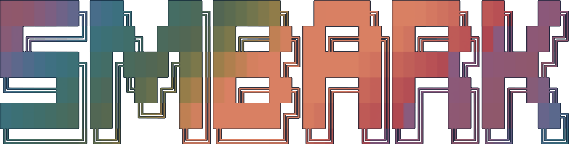
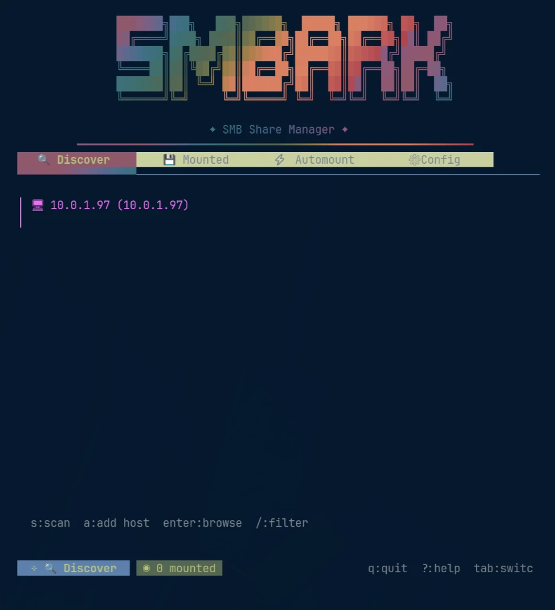
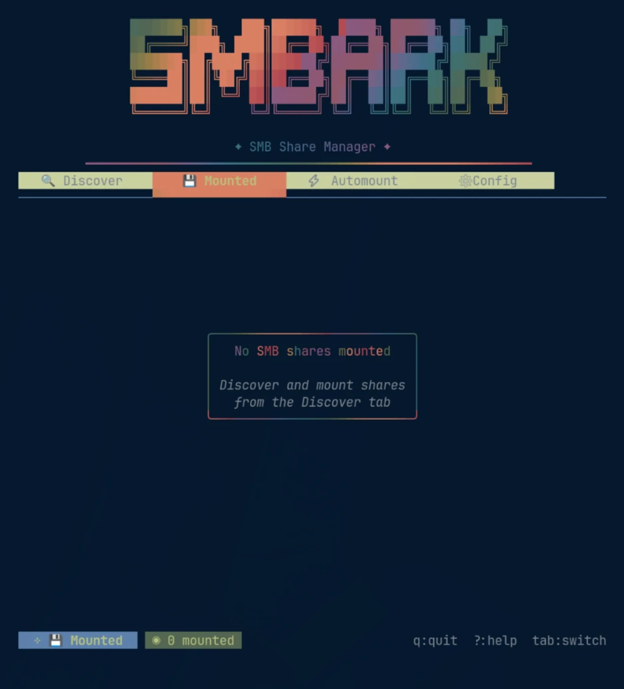
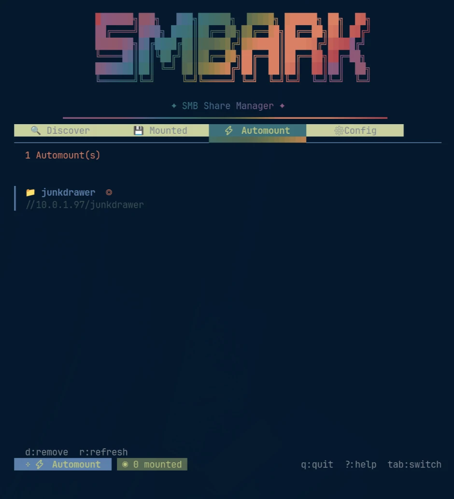
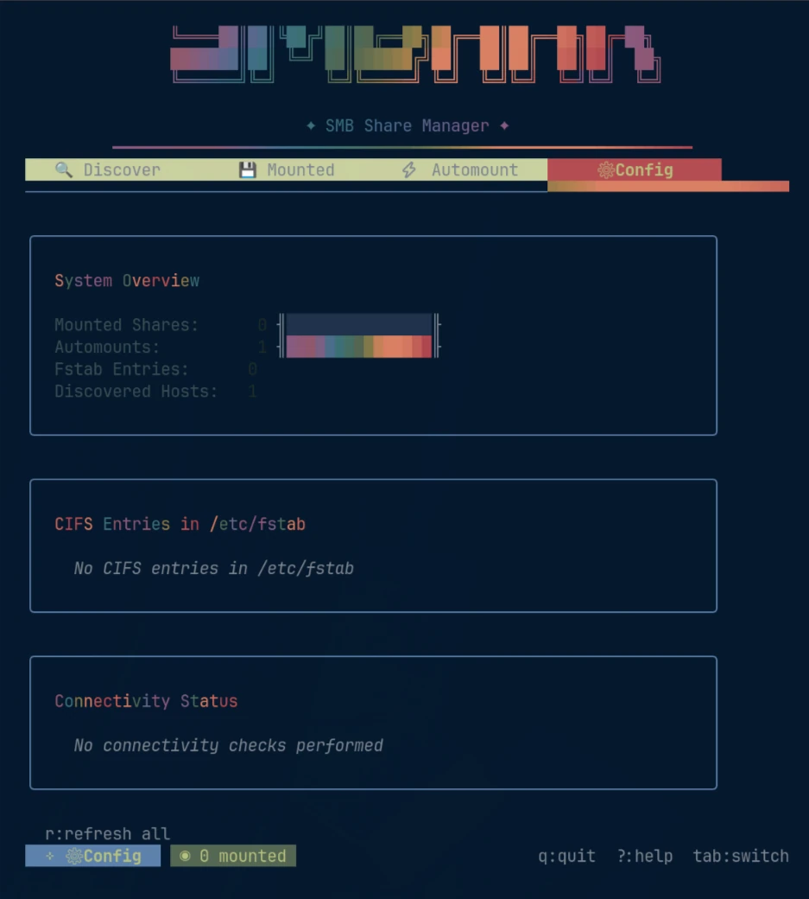

Discover on the LAN
Scan the network and find SMB servers and shares without memorizing IPs.

GitHubSMBARK is a terminal user interface for finding SMB/CIFS hosts on your network, mounting shares, and keeping automounts sane. Fast, native, keyboard-first.




Scan the network and find SMB servers and shares without memorizing IPs.
Mount, unmount, and inspect shares without dropping out to a pile of shell commands.
Promote shares into automounts and keep the persistent stuff in one obvious place.
See mounted shares, CIFS/fstab state, discovered hosts, and connectivity at a glance.
No Electron. No web server hiding behind a terminal window. Pick your environment and get on with it.
go install github.com/z19r/smbark@latest# Launch the TUI
smbark
# Discover hosts
smbark scan
# Open help anywhere in the TUI
?SMB management has spent decades bouncing between inscrutable incantations and giant desktop control panels. SMBARK lives in the useful middle: visible state, explicit actions, zero mouse dependency.
Find hosts and shares on the network.
Bring shares online and see what’s already mounted.
Keep the shares you actually use available.
Understand the CIFS state of the machine.